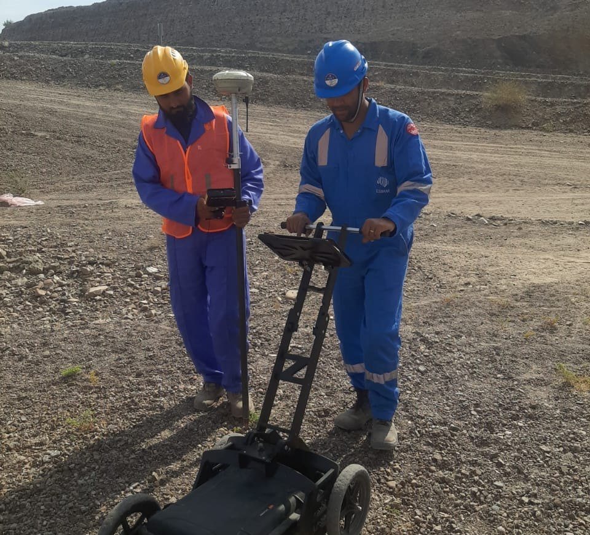

Project experience across India and Oman
Our team members have delivered GPR and geophysical surveys on major infrastructure and energy projects in both countries.
India
IN- Road & highway projectsMultiple projects
Utility detection for road widening, flyovers and junction improvements across Indian states.
- Metro rail projectsUrban transit
Utility clearance surveys along metro alignments and at station locations before piling and excavation.
- Smart city projectsCity utilities
Mapping underground services for smart city programmes and building utility GIS records.
- Industrial facilitiesOperating plants
Safe-dig and structural scanning inside industries with dense, live underground networks.
Oman
OM- PDO areas across OmanOil & gas
GPR utility detection across Petroleum Development Oman concession areas, locating pipelines and cables in desert terrain.
- Hafeet Rail projectOman–UAE rail
Subsurface investigation supporting the rail link between Sohar and Abu Dhabi.
- Projects outside PDOInfrastructure
Utility and geophysical surveys for industrial, road and infrastructure clients across Oman.
From our sites
